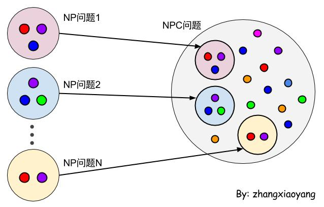
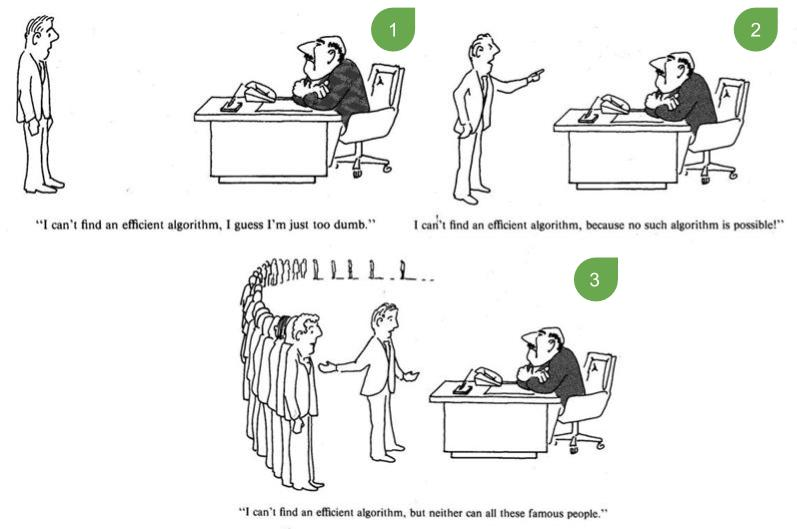
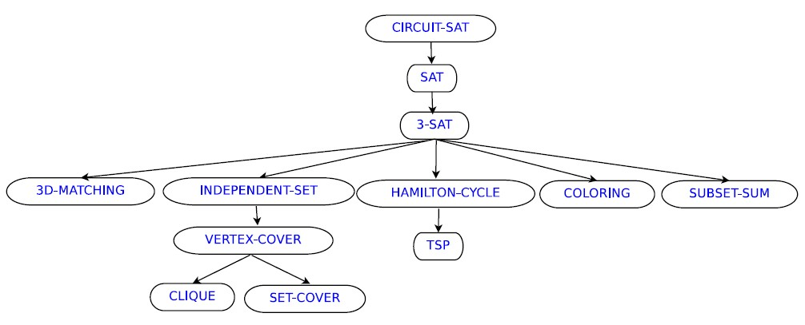
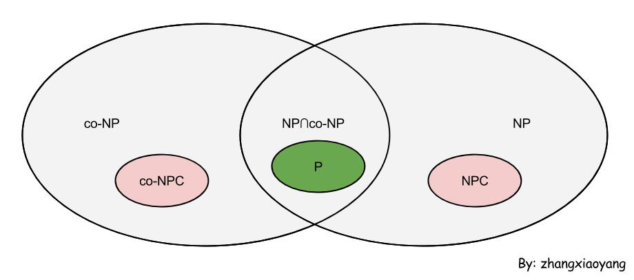

自学算法导论(8)
常常看到NP、NPC，这个是什么东东，让人一头雾水。真心没觉得这东西有用，真的没有用吗？
美剧《基本演绎法》（也就是美版“福尔摩斯”）第2季第2集中，两位研究 NP问题的数学家被谋杀了，凶手是同行，因为被害者即将证明“P=NP 问题”，她为独吞成果而下了毒手。然而凶手的动机，并不是千禧年大奖难题那100万美元的奖金——解决了P=NP问题，就能够破译世界上所有的密码系统，这里面的利益比100万美元多多了。（来自果壳）
且不管P和NP是啥，证明了P=NP就能破译所有的密码系统！？我和我的小伙伴们惊呆了！
再谈算法复杂度
我们在设计算法的时候有一个癖好，那就是计算算法的时间复杂度，简称算法的复杂度。
为什么要计算算法的复杂度？
因为计算机很难hold住“复杂”的算法，在解决实际的问题时，我们通常需要“不复杂”的算法，也就是多项式级的算法，如$O(1),O(log(n)),O(n^a)$等。
既然有多项式级的算法，就有非多项式级的，如$O(a^n),O(n!)$等，显然我们更喜欢前者。
而现实情况是，并不是所有的问题都能找到多项式级的算法，甚至有些问题根本没法找到算法，如停机问题（The Halting Problem）。
往往更现实的情况是，你说没有多项式级的算法，别人并不一定相信，空口无凭。如果因为没有找到好的算法，而被老板开除了，这也太冤了吧。所以，要证明这个问题本来就是“很难的问题”，并且其他人也不能解决这个问题（多项式时间内）。
如何证明？
所以，才有了P、NP这些概念。
P、NP、NPC、NPH
P（Polynomial）
P表示“多项式”，所以P问题直译就是“多项式问题”。
对于一个问题，如果存在一个多项式时间内解决该问题的算法，就说这个问题属于P问题。所以，P问题表示一类问题。
这个是最好理解的，如果我们能够找到一个靠谱的算法在多项式时间内搞定一个问题，这个问题就是P问题。
如果不能找到这样的算法，不能武断的把这个问题归为非P问题。找不到，不代表没有。
NP（Nondeterministic Polynomial）
直译NP问题就是“非确定的多项式问题”。这里的“N”并不表示“非”，所以NP并不是非P问题。
如果我们不能在多项式时间内解决某个问题，就不知道该问题是不是P问题了。
于是，我们试着放宽要求，提出了NP问题。
可以在多项式的时间里验证一个解的问题，就是NP问题。比较严谨的解释：
验证（Verify）的意思是：给定一个问题的实例（Instance）、证书（Certificate，证书就是类似于证据），需要验证这个证书是这个问题的正确答案。
比如汉密尔顿路径问题，实例为G=(V,E)，证书为顶点序列 {v0,v1,v2,v3,….,vk}，我们的目的是要验证这个证书就是这个问题的答案，验证方法为：先遍历一遍这个点序列，看看是不是每个点只出现一次，然后对于(vi,vi+1)是否为G的边，这样就能够验证这个点序列是不是汉密尔顿路径，很显然这个验证过程是多项式时间的，所以汉密尔顿路径是NP问题。（来自这里）
所以，找不到多项式时间的算法不要急，如果可以在多项式的时间里验证出解来，就把这个问题称作NP问题。NP问题同样表示一类问题。
P与NP的关系
P和NP的不同在于，存在解决方案（多项式的时间）的问题才称作P问题。而NP问题不关心存不存在这样的解决方案，只要能够验证解的正确性即可，当然，要在多项式的时间内验证。
比如，对很多个数字进行递增排序的问题，这就是个P问题，因为可以找到一个算法（如快速排序），在多项式时间内解决这个问题。
同时，这个也是一个NP问题，因为我们可以猜测所有可能的排序方式，能过保证在多项式的时间内猜出正确的解，也就是递增的排序。如果人品好，可能一下子就猜对了。
就像批试卷一样，做对题花的时间肯定比批试卷花的时间要长，因为批试卷的时候不需要把所有的题目再做一次。
所以，多项式时间内可以解决的问题，一定可以在多项式时间内验证解。即，$P \subseteq NP$。
至此，我们可以得到，所有的P类问题都是NP问题。
那NP问题是P类问题吗？
这个问题目前还没人搞定。不过，人们趋向于相信NP问题不一定是P类问题。这里的相信是有原因的，并非凭空想象。
NPC
正是NPC问题的提出，使得人们更加相信NP问题不一定是P类问题。
NPC问题（又称作NP-完全问题），是一类特殊的NP问题，所以本质上仍然是NP问题。
从P到NP，再到NPC，不会是凭空想象的，是有一条线路的。
P问题是我们最喜欢的问题，多项式时间内可以解决。但是，仍然有很多问题不是P问题，也就是说不存在多项式时间内解决的算法。于是，就有了NP问题。NP问题要比P问题“难”一些，所以我们不奢望解决问题，而是希望在多项式的时间内验证一个解。
说的这里，就会想，有没有比NP问题更“难”一些的问题。所以，就提出了NPC问题，这是NP问题里面最难的问题，当然，它仍然属于NP问题。
那有没有比NPC更难的呢？前面提到的停机问题，直接就没有算法可以解决，够难了吧。
但是，我们更关注NPC。因为NPC使得我们相信NP问题不是P问题。
NP问题是不是P问题和我们有关系吗？
如果NP问题是P问题，我们已经证明了P问题是NP问题，所以P=NP。
文章开篇提到，“证明了P=NP就能破译所有的密码系统”，所以还是和我们有关系的。至于如何从NP问题里找到最难的问题（NPC）问题，下面会讨论。
NPC
什么是NPC问题
NPC问题需要满足两个条件：
- NPC问题是一个NP问题
- 所有的NP问题都可以规约成NPC问题
什么是规约（Reducibility）
规约是指对问题进行规约，也就是把问题变“难”。通过把所有的问题进行规约，可以得到NPC问题。
当然，规约并不是仅仅变“难”这么简单，规约是有原则的。
如果能找到这样一个变化法则，对任意一个程序A的输入，都能按这个法则变换成程序B的输入，使两程序的输出相同，那么我们说，问题A可规约为问题B。
我们可以发现，解决B问题的算法更NB，也可以用来解决A问题，而且B问题要比A问题难。这样我们就说，A问题可以规约成B问题。
很显然，这里的规约是可以传递的。如果A可以规约成B，B可以规约成C，则A也可以规约成C。
值得一提的是，这里的规约，也就是转化问题所花费的开销，必须是多项式时间。
扯了这么多，无非是想说，能不能把所有的NP问题都进行规约，看看能不能规约成同一个大问题。答案是肯定的。

怎么可能呢？这么多不同的问题，怎么可能都用同一个方法解决？！事实情况是，的确存在这样一个大的NP问题，也就是最难最复杂的NP问题，通吃所有小NP问题的超级NP问题。
而且，这样的超级NP问题不只有一个，这就是传说中的NPC问题。
所以，如果一个NPC问题可以规约成某个问题，这个问题就可以直接判定为NPC问题。
NPC的“好处”
如果我们知道的NPC问题越多，对我们是越有帮助。
从下面这个小故事当中，可以感受到NPC带来的“好处”。
假如老板要你解决一个问题，想了半天也没想出来，那怎么办呢？可以采取三种措施，如下图，摘自《计算机与复杂性》。

很显然第三种更高端更有效啦，当然，这里只是调侃一下。
一些NPC问题
- 1971年，Stephen Cook提出了第一个NPC问题：布尔可满足性问题。
- 1973年，Leonid Levin提出了21个经典的NPC问题。
- 1979年，Garey和Johnson出版了一本书：“Computers and Intractability: A Guide to NP-Completeness”，中文版是“计算机和难解性”，在这本书中提出了“6个基本的NPC问题：3SAT、顶点覆盖、团、三维匹配、汉密尔顿回路、划分问题”
一张图可以表示NPC的“族谱”，如下图。

其它问题
除此之外，还有NPH（NP-Hard）问题，co-NP问题，Exp问题等等。
- NP-Hard问题只是满足NPC问题定义的第二条，所以它不一定是NP问题。而且，由于NPH放宽了限定条件，它将有可能比所有的NPC问题还要难。
- co-NP是NP的补问题，所以，co-NP未必是NP问题。
- EXP问题不同于P问题，EXP问题只要求指数级的时间复杂度。
部分问题之间的关系如下图。

不过，话又说回来，如果P真的等于NP呢？
请看果壳的介绍：http://www.guokr.com/article/437662/。
感谢以下博文：
- http://www.matrix67.com/blog/archives/105
- http://xxaqustc.blog.51cto.com/3583683/739438
- http://www.guokr.com/article/437662/
- http://blog.csdn.net/xiazdong/article/details/8258053
- http://junjiema2.wordpress.com/2011/09/01/%E8%BD%ACp%EF%BC%8Cnp%EF%BC%8Cnp-c%EF%BC%8Cnp-hard/
-- EOF --